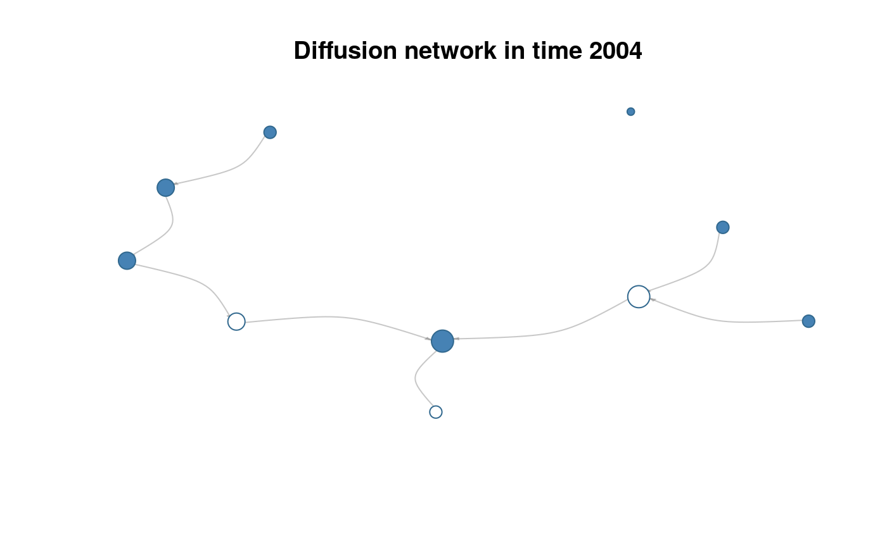

diffnet objects contain difussion networks. With adjacency
matrices and time of adoption (toa) vector as its main components, most of the
package's functions have methods for this class of objects.
as_diffnet(graph, ...) # S3 method for default as_diffnet(graph, ...) # S3 method for networkDynamic as_diffnet(graph, toavar, ...) new_diffnet(graph, toa, t0 = min(toa, na.rm = TRUE), t1 = max(toa, na.rm = TRUE), vertex.dyn.attrs = NULL, vertex.static.attrs = NULL, id.and.per.vars = NULL, graph.attrs = NULL, undirected = getOption("diffnet.undirected"), self = getOption("diffnet.self"), multiple = getOption("diffnet.multiple"), name = "Diffusion Network", behavior = "Unspecified") # S3 method for diffnet as.data.frame(x, row.names = NULL, optional = FALSE, attr.class = c("dyn", "static"), ...) diffnet.attrs(graph, element = c("vertex", "graph"), attr.class = c("dyn", "static"), as.df = FALSE) diffnet.attrs(graph, element = "vertex", attr.class = "static") <- value diffnet.toa(graph) diffnet.toa(graph, i) <- value # S3 method for diffnet print(x, ...) nodes(graph) diffnetLapply(graph, FUN, ...) # S3 method for diffnet str(object, ...) # S3 method for diffnet dimnames(x) # S3 method for diffnet t(x) # S3 method for diffnet dim(x)
| graph | A dynamic graph (see |
|---|---|
| ... | Further arguments passed to the jmethod. |
| toavar | Character scalar. Name of the variable that holds the time of adoption. |
| toa | Numeric vector of size \(n\). Times of adoption. |
| t0 | Integer scalar. Passed to |
| t1 | Integer scalar. Passed to |
| vertex.dyn.attrs | Vertices dynamic attributes (see details). |
| vertex.static.attrs | Vertices static attributes (see details). |
| id.and.per.vars | A character vector of length 2. Optionally specified to check the order of the rows in the attribute data. |
| graph.attrs | Graph dynamic attributes (not supported yet). |
| undirected | Logical scalar. When |
| self | Logical scalar. When |
| multiple | Logical scalar. When |
| name | Character scalar. Name of the diffusion network (descriptive). |
| behavior | Character scalar. Name of the behavior been analyzed (innovation). |
| x | A |
| row.names | Ignored. |
| optional | Ignored. |
| attr.class | Character vector/scalar. Indicates the class of the attribute, either dynamic ( |
| element | Character vector/scalar. Indicates what to retrieve/alter. |
| as.df | Logical scalar. When TRUE returns a data.frame. |
| value | In the case of |
| i | Indices specifying elements to replace. See |
| FUN | a function to be passed to lapply |
| object | A |
A list of class diffnet with the following elements:
A list of length \(T\). Containing sparse square matrices of size \(n\)
and class dgCMatrix.
An integer vector of size \(T\) with times of adoption.
Numeric matrices of size \(n\times T\) as those returned
by toa_mat.
If not NULL, a data frame with \(n\) rows with vertex static attributes.
A list of length \(T\) with data frames containing vertex attributes throught time (dynamic).
A data frame with \(T\) rows.
A list of length 9 with the following elements:
type: Character scalar equal to "dynamic".
class: Character scalar equal to "list".
ids: Character vector of size \(n\) with vertices' labels.
pers: Integer vector of size \(T\).
nper: Integer scalar equal to \(T\).
n: Integer scalar equal to \(n\).
self: Logical scalar.
undirected: Logical scalar.
multiple: Logical scalar.
name: Character scalar.
behavior: Character scalar.
diffnet objects hold both, static and dynamic vertex attributes. When
creating diffnet objects, these can be specified using the arguments
vertex.static.attrs and vertex.dyn.attrs; depending on whether
the attributes to specify are static or dynamic, netdiffuseR currently
supports the following objects:
| Class | Dimension | Check sorting |
| Static attributes | matrix | with \(n\) rows |
id | data.frame | with \(n\) rows |
id | vector | of length \(n\) |
| - | Dynamic attributes | matrix |
| with \(n\times T\) rows | id, per | data.frame |
| with \(n\times T\) rows | id, per | vector |
| of length \(n\times T\) | - | list |
| of length \(T\) with matrices or data.frames of \(n\) rows | id, per |
The last column, Check sorting, lists the variables that
the user should specify if he wants the function to check the order of the rows
of the attributes (notice that this is not possible for the case of vectors).
By providing the name of the vertex id variable, id, and the time period
id variable, per, the function makes sure that the attribute data is
presented in the right order. See the example below. If the user does not
provide the names of the vertex id and time period variables then the function
does not check the way the rows are sorted, further it assumes that the data
is in the correct order.
diffnet.attrs Allows retriving network attributes. In particular, by default
returns a list of length \(T\) with data frames with the following columns:
per Indicating the time period to which the observation corresponds.
toa Indicating the time of adoption of the vertex.
Further columns depending on the vertex and graph attributes.
Each vertex static attributes' are repeated \(T\) times in total so that these
can be binded (rbind) to dynamic attributes.
When as.df=TRUE, this convenience function is useful as it can be used
to create event history (panel data) datasets used for model fitting.
Conversely, the replacement method allows including new vertex or graph attributes either dynamic or static (see examples below).
diffnet.toa(graph) works as an alias of graph$toa.
The replacement method, diffnet.toa<- used as diffnet.toa(graph)<-...,
is the right way of modifying times of adoption as when doing so it
performs several checks on the time ranges, and
recalculates adoption and cumulative adoption matrices using toa_mat.
nodes(graph) is an alias for graph$meta$ids.
Default options are listed at netdiffuseR-options
Other diffnet methods: %*%,
as.array.diffnet, c.diffnet,
diffnet-arithmetic,
diffnet_index, plot.diffnet,
summary.diffnet
Other data management functions: edgelist_to_adjmat,
egonet_attrs, isolated,
survey_to_diffnet
# Creating a random graph set.seed(123) graph <- rgraph_ba(t=9) graph <- lapply(1:5, function(x) graph) # Pretty TOA names(graph) <- 2001L:2005L toa <- sample(c(2001L:2005L,NA), 10, TRUE) # Creating diffnet object diffnet <- new_diffnet(graph, toa) diffnet#> Dynamic network of class -diffnet- #> Name : Diffusion Network #> Behavior : Unspecified #> # of nodes : 10 (1, 2, 3, 4, 5, 6, 7, 8, ...) #> # of time periods : 5 (2001 - 2005) #> Type : directed #> Final prevalence : 0.80 #> Static attributes : - #> Dynamic attributes : -summary(diffnet)#> Diffusion network summary statistics #> Name : Diffusion Network #> Behavior : Unspecified #> ----------------------------------------------------------------------------- #> Period Adopters Cum Adopt. (%) Hazard Rate Density Moran's I (sd) #> -------- ---------- ---------------- ------------- --------- ---------------- #> 2001 2 2 (0.20) - 0.11 0.09 (0.20) #> 2002 2 4 (0.40) 0.25 0.11 0.19 (0.22) #> 2003 2 6 (0.60) 0.33 0.11 -0.33 (0.22) #> 2004 1 7 (0.70) 0.25 0.11 -0.54 (0.21) ** #> 2005 1 8 (0.80) 0.33 0.11 -0.23 (0.20) #> ----------------------------------------------------------------------------- #> Left censoring : 0.20 (2) #> Right centoring : 0.20 (2) #> # of nodes : 10 #> #> Moran's I was computed on contemporaneous autocorrelation using 1/geodesic #> values. Significane levels *** <= .01, ** <= .05, * <= .1.# Plotting slice 4 plot(diffnet, t=4)# ATTRIBUTES ---------------------------------------------------------------- # Retrieving attributes diffnet.attrs(diffnet, "vertex", "static")#> $`2001` #> per toa #> 1 2001 2003 #> 2 2001 NA #> 3 2001 2003 #> 4 2001 2005 #> 5 2001 2004 #> 6 2001 2001 #> 7 2001 NA #> 8 2001 2002 #> 9 2001 2001 #> 10 2001 2002 #> #> $`2002` #> per toa #> 1 2002 2003 #> 2 2002 NA #> 3 2002 2003 #> 4 2002 2005 #> 5 2002 2004 #> 6 2002 2001 #> 7 2002 NA #> 8 2002 2002 #> 9 2002 2001 #> 10 2002 2002 #> #> $`2003` #> per toa #> 1 2003 2003 #> 2 2003 NA #> 3 2003 2003 #> 4 2003 2005 #> 5 2003 2004 #> 6 2003 2001 #> 7 2003 NA #> 8 2003 2002 #> 9 2003 2001 #> 10 2003 2002 #> #> $`2004` #> per toa #> 1 2004 2003 #> 2 2004 NA #> 3 2004 2003 #> 4 2004 2005 #> 5 2004 2004 #> 6 2004 2001 #> 7 2004 NA #> 8 2004 2002 #> 9 2004 2001 #> 10 2004 2002 #> #> $`2005` #> per toa #> 1 2005 2003 #> 2 2005 NA #> 3 2005 2003 #> 4 2005 2005 #> 5 2005 2004 #> 6 2005 2001 #> 7 2005 NA #> 8 2005 2002 #> 9 2005 2001 #> 10 2005 2002 #># Now as a data.frame (only static) diffnet.attrs(diffnet, "vertex", "static", as.df = TRUE)#> per toa id #> 1 2001 2003 1 #> 2 2001 NA 2 #> 3 2001 2003 3 #> 4 2001 2005 4 #> 5 2001 2004 5 #> 6 2001 2001 6 #> 7 2001 NA 7 #> 8 2001 2002 8 #> 9 2001 2001 9 #> 10 2001 2002 10 #> 11 2002 2003 1 #> 12 2002 NA 2 #> 13 2002 2003 3 #> 14 2002 2005 4 #> 15 2002 2004 5 #> 16 2002 2001 6 #> 17 2002 NA 7 #> 18 2002 2002 8 #> 19 2002 2001 9 #> 20 2002 2002 10 #> 21 2003 2003 1 #> 22 2003 NA 2 #> 23 2003 2003 3 #> 24 2003 2005 4 #> 25 2003 2004 5 #> 26 2003 2001 6 #> 27 2003 NA 7 #> 28 2003 2002 8 #> 29 2003 2001 9 #> 30 2003 2002 10 #> 31 2004 2003 1 #> 32 2004 NA 2 #> 33 2004 2003 3 #> 34 2004 2005 4 #> 35 2004 2004 5 #> 36 2004 2001 6 #> 37 2004 NA 7 #> 38 2004 2002 8 #> 39 2004 2001 9 #> 40 2004 2002 10 #> 41 2005 2003 1 #> 42 2005 NA 2 #> 43 2005 2003 3 #> 44 2005 2005 4 #> 45 2005 2004 5 #> 46 2005 2001 6 #> 47 2005 NA 7 #> 48 2005 2002 8 #> 49 2005 2001 9 #> 50 2005 2002 10# Now as a data.frame (all of them) diffnet.attrs(diffnet, as.df = TRUE)#> per toa id #> 1 2001 2003 1 #> 2 2001 NA 2 #> 3 2001 2003 3 #> 4 2001 2005 4 #> 5 2001 2004 5 #> 6 2001 2001 6 #> 7 2001 NA 7 #> 8 2001 2002 8 #> 9 2001 2001 9 #> 10 2001 2002 10 #> 11 2002 2003 1 #> 12 2002 NA 2 #> 13 2002 2003 3 #> 14 2002 2005 4 #> 15 2002 2004 5 #> 16 2002 2001 6 #> 17 2002 NA 7 #> 18 2002 2002 8 #> 19 2002 2001 9 #> 20 2002 2002 10 #> 21 2003 2003 1 #> 22 2003 NA 2 #> 23 2003 2003 3 #> 24 2003 2005 4 #> 25 2003 2004 5 #> 26 2003 2001 6 #> 27 2003 NA 7 #> 28 2003 2002 8 #> 29 2003 2001 9 #> 30 2003 2002 10 #> 31 2004 2003 1 #> 32 2004 NA 2 #> 33 2004 2003 3 #> 34 2004 2005 4 #> 35 2004 2004 5 #> 36 2004 2001 6 #> 37 2004 NA 7 #> 38 2004 2002 8 #> 39 2004 2001 9 #> 40 2004 2002 10 #> 41 2005 2003 1 #> 42 2005 NA 2 #> 43 2005 2003 3 #> 44 2005 2005 4 #> 45 2005 2004 5 #> 46 2005 2001 6 #> 47 2005 NA 7 #> 48 2005 2002 8 #> 49 2005 2001 9 #> 50 2005 2002 10as.data.frame(diffnet) # This is a wrapper#> per toa id #> 1 2001 2003 1 #> 2 2001 NA 2 #> 3 2001 2003 3 #> 4 2001 2005 4 #> 5 2001 2004 5 #> 6 2001 2001 6 #> 7 2001 NA 7 #> 8 2001 2002 8 #> 9 2001 2001 9 #> 10 2001 2002 10 #> 11 2002 2003 1 #> 12 2002 NA 2 #> 13 2002 2003 3 #> 14 2002 2005 4 #> 15 2002 2004 5 #> 16 2002 2001 6 #> 17 2002 NA 7 #> 18 2002 2002 8 #> 19 2002 2001 9 #> 20 2002 2002 10 #> 21 2003 2003 1 #> 22 2003 NA 2 #> 23 2003 2003 3 #> 24 2003 2005 4 #> 25 2003 2004 5 #> 26 2003 2001 6 #> 27 2003 NA 7 #> 28 2003 2002 8 #> 29 2003 2001 9 #> 30 2003 2002 10 #> 31 2004 2003 1 #> 32 2004 NA 2 #> 33 2004 2003 3 #> 34 2004 2005 4 #> 35 2004 2004 5 #> 36 2004 2001 6 #> 37 2004 NA 7 #> 38 2004 2002 8 #> 39 2004 2001 9 #> 40 2004 2002 10 #> 41 2005 2003 1 #> 42 2005 NA 2 #> 43 2005 2003 3 #> 44 2005 2005 4 #> 45 2005 2004 5 #> 46 2005 2001 6 #> 47 2005 NA 7 #> 48 2005 2002 8 #> 49 2005 2001 9 #> 50 2005 2002 10# Unsorted data ------------------------------------------------------------- # Loading example data data(fakesurveyDyn) # Creating a diffnet object fs_diffnet <- survey_to_diffnet( fakesurveyDyn, "id", c("net1", "net2", "net3"), "toa", "group", timevar = "time", keep.isolates=TRUE, warn.coercion=FALSE) # Now, we extract the graph data and create a diffnet object from scratch graph <- fs_diffnet$graph ids <- fs_diffnet$meta$ids graph <- Map(function(g) { dimnames(g) <- list(ids,ids) g }, g=graph) attrs <- diffnet.attrs(fs_diffnet, as.df=TRUE) toa <- diffnet.toa(fs_diffnet) # Lets apply a different sorting to the data to see if it works n <- nrow(attrs) attrs <- attrs[order(runif(n)),] # Now, recreating the old diffnet object (notice -id.and.per.vars- arg) fs_diffnet_new <- new_diffnet(graph, toa=toa, vertex.dyn.attrs=attrs, id.and.per.vars = c("id", "per")) # Now, retrieving attributes. The 'new one' will have more (repeated) attrs_new <- diffnet.attrs(fs_diffnet_new, as.df=TRUE) attrs_old <- diffnet.attrs(fs_diffnet, as.df=TRUE) # Comparing elements! tocompare <- intersect(colnames(attrs_new), colnames(attrs_old)) all(attrs_new[,tocompare] == attrs_old[,tocompare], na.rm = TRUE) # TRUE!#> [1] TRUE# diffnetLapply ------------------------------------------------------------- data(medInnovationsDiffNet) diffnetLapply(medInnovationsDiffNet, function(x, cumadopt, ...) {sum(cumadopt)})#> [[1]] #> [1] 11 #> #> [[2]] #> [1] 20 #> #> [[3]] #> [1] 29 #> #> [[4]] #> [1] 40 #> #> [[5]] #> [1] 51 #> #> [[6]] #> [1] 62 #> #> [[7]] #> [1] 75 #> #> [[8]] #> [1] 82 #> #> [[9]] #> [1] 86 #> #> [[10]] #> [1] 87 #> #> [[11]] #> [1] 92 #> #> [[12]] #> [1] 95 #> #> [[13]] #> [1] 98 #> #> [[14]] #> [1] 102 #> #> [[15]] #> [1] 106 #> #> [[16]] #> [1] 108 #> #> [[17]] #> [1] 109 #> #> [[18]] #> [1] 125 #>